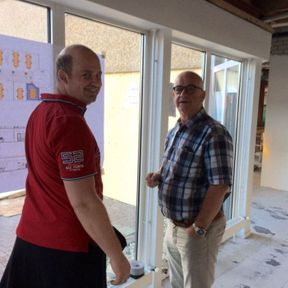
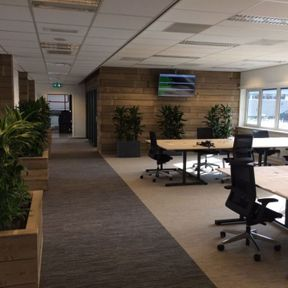
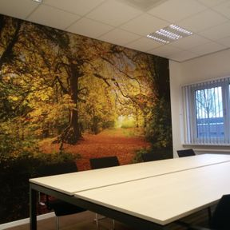
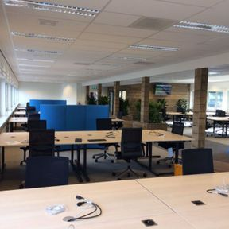
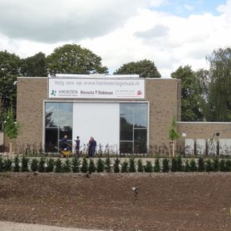

Nieuwbouw, verbouw en aanbouw
Een huis laten bouwen, een gekochte woning eerst goed verbouwen, of meer ruimte met een aanbouw of dakkapel zodat u in uw vertrouwde buurt kunt blijven wonen. Van ontwerp tot oplevering kunt u op ons rekenen.
Bouw- en aannemingsbedrijf in Culemborg
Van Santen & Zn is een familiebedrijf in de derde generatie. Een nieuw kozijn krijgt bij ons net zoveel aandacht als een complete nieuwbouwwoning.

U bepaalt hoe uw huis of bedrijfspand eruit moet zien. Wij zorgen dat het er zo komt te staan: van eenvoudig onderhoud tot een complete renovatie.
Een huis laten bouwen, een gekochte woning eerst goed verbouwen, of meer ruimte met een aanbouw of dakkapel zodat u in uw vertrouwde buurt kunt blijven wonen. Van ontwerp tot oplevering kunt u op ons rekenen.
Een nieuwe badkamer of woonkeuken, een boerderij die helemaal opnieuw moet, of een monument in de binnenstad. Vertrouwd, maar dan mooier. Onze vakmensen en ambachtslieden doen het werk zelf.
Kantoren, showrooms, bedrijfshallen en herbestemming van bestaande panden. Voor een betere productie of een prettigere werkplek, gebouwd zoals u het voor ogen heeft.
Van kantoorverdiepingen in Culemborg tot een boerderij aan de Beusichemsedijk. Een greep uit de projecten die wij samen met architecten en opdrachtgevers hebben gebouwd.



Het volledig renoveren van drie kantoorverdiepingen.

R.K.-kerk verbouwd tot uitvaartcentrum. Rhenoyseweg 7, Rhenoy. Architect Synarchi & H. van der Wielen.
In meer dan 80 jaar hebben we heel wat kennis verzameld. Bij ons werken vakmensen, ambachtslieden en specialisten op ieder gebied in de bouw, ook voor renovatie en restauratie. Daar zijn we trots op.
1939
Opa Cornelis Marinus van Santen richt het bedrijf op in Culemborg.
1979
Veertig jaar later neemt zijn zoon het stokje over.
2013
De derde generatie staat aan het roer.
Persoonlijk contact, afspraken nakomen en goed werk leveren. Daarmee staan we dicht bij de opdrachtgever en kunnen we snel en flexibel inspelen op wat u wilt, bij grote en kleine projecten.
Vertel ons wat u wilt bouwen, verbouwen of herstellen. We denken mee en bespreken de mogelijkheden met u.
0345 512 314